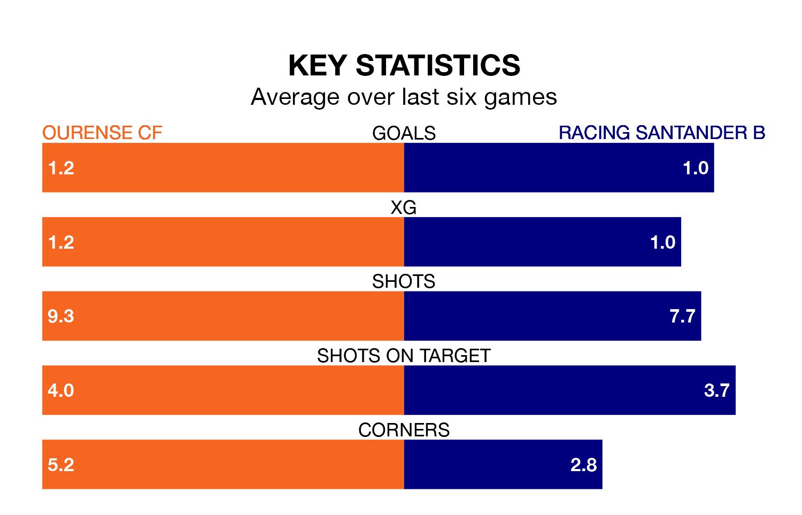

Ourense CF host Racing Santander B in Saturday's match at the Estadio Mpal De Oira looking to bounce back from defeat last time out in Segunda División RFEF Group 1.
Ourense, who sit top of the league after 17 games, fell to a 0-2 home defeat to Real Avilés on January 6.
They face a Racing Santander B side who also lost their last match, a 3-1 defeat to SD Compostela, and who sit fourth in the table.
With 27 goals in 17 games so far this season, Racing Santander B are the league's second-highest scorers with 1.6 goals per game. And they are conceding fewer than average, letting in 17 goals at a rate of 1.0 per game.
Ourense, meanwhile, are average scorers, with 1.2 goals per game. They have conceded 0.6 goals per game.
The hosts are in reasonable form in Segunda División RFEF Group 1, with three wins and two draws from their last six games.
With two wins and two draws over that period, the away team's form is worse – they have taken eight points from 18, compared to Ourense's 11.
Updated: 11:31, 09/01/24